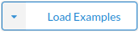

The easiest way to get started with Metafacture is the Playground. Take a look at an example and run it by pressing the button. Check out the other examples (first button, ) for different input sources, transformations, and output formats.
For commands available in the Flux, see the Flux commands documentation.
For functions and usage of the Fix, see the Fix functions and cookbook.
To use Metafacture as a command-line tool, download the latest metafix-runner from our releases page. Extract the downloaded archive and change into the newly created directory (e.g. cd metafacture-runner-0.4.0). Run a Flux workflow with:
$ ./bin/metafix-runner /path/to/your.flux on Unix/Linux/Mac or $ ./bin/metafix-runner.bat /path/to/your.flux on Windows.
To get started, you can export a workflow from the Playground (last button, ).
To set up IDE support for editing your Flux and Fix files, see the IDE extensions page.
If you want to use Metafacture in your own Java projects all you need is to add some dependencies to your project. As of Metafacture 5, the single metafacture-core package has been replaced with a number of domain-specific packages. You can find the list of packages on Maven Central.
Alternatively, you can simply guess the package names from the top-level folders in the source code repository – they are the same.
For instance, if you want to use the metafacture-io library in your project, simply add the following dependency to your pom.xml:
<dependency>
<groupId>org.metafacture</groupId>
<artifactId>metafacture-io</artifactId>
<version>$VERSION</version>
</dependency>or if Gradle is your build tool of choice use:
dependencies {
implementation 'org.metafacture:metafacture-io:$VERSION'
}To use Fix you would declare metafix instead of metafacture-io as in the example above. Note that metafix is not published to maven central but only to github releases.
Occasionally, we publish snapshot builds on Sonatype OSS Repository. The version number is derived from the branch name. Snapshot builds from the master branch always have the version master-SNAPSHOT. We also provide sometimes pre releases as github packages.
Get familar with FLUX and FIX. And try out some Metafacture workflows.
If you plan to use Metafacture as a Java library or if you wish to add commands to Flux you should get familar with the Framework.
For a complete introduction to Metafacture in German, check out the latest iteration of our Metafacture Workshop. For different use cases, e.g. using Metafacture as a library, using the Morph language, and more, see our documentation collection.